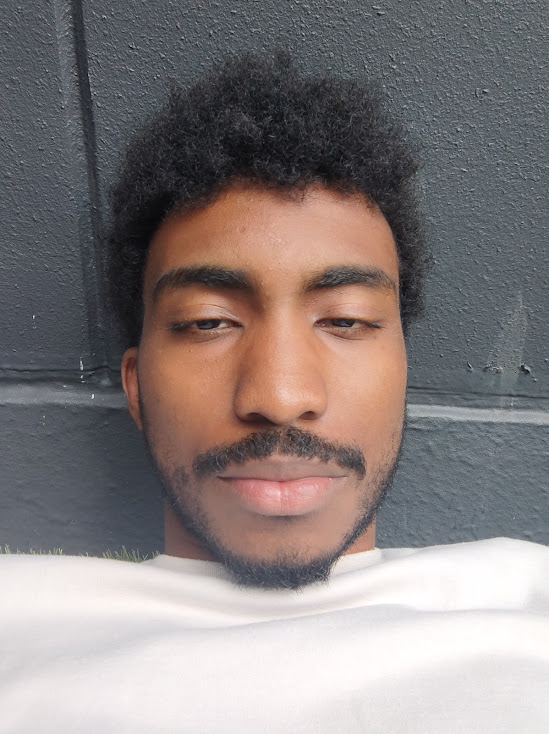

Juan Valentín Castillo Lozano (Valentin for short)

Who I currently am is not as exciting as who I wish I was or who I want to be. I'm an aspiring Web Developer, I want to know multiple languages besides English and Spanish, from Japanese to Portuguese.
I want to have multiple Youtube Channels, and Influence people around the world to live their best lifes, I want to be a force of good in the world and those around me, there are so many things I want to be,
and so who I currently am is nothing more than a person who aspires to be a bunch of different things. I am a learner, and will forever be one, I plan to live a life with no regrets, so I intend to give my
all in everything.
Education
- High School Completed at Instituto Colombo Venezolano Medellin, Colombia in 2015
- Computer Science, EAFIT University Medellin, Colombia, Dropped Out 2022
Work Experience
I'm grateful for the opportunities I had, so I don't want to sound ungrateful, but I wish I never had to work at any of these places
- Collections Representative at Scotiabank for their Caribbean countries 2021 Sep - 2022 July
I was charged with the responsability of calling Scotiabank Credit Card and Loan clients who were in arrears to collect money from them
- Billing Representative at ADT Security Services 2023 Feb - 2023 Oct
I was tasked with the responsability of answering ADT client calls regarding their billing and assist them appropiately, the work was good and the pay was nice
however the work also required lots of empathy and at time it was difficult to stay sane.
Skills/Awards/Achievements
I do not possess many note-worthy skills (yet), but here are the few I can argue I have.
- I'm Bilingual in Spanish and English(Working on my Japanese)
- I'm organized (is this even a skill?)
- I reached GM in League of Legends
- I type a bit fast
- I edit my own videos, so video editing a bit. (no more than your average tiktok user)
- This just got depressing lol, I have no skills..
Contact Me
Hobbies